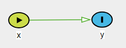
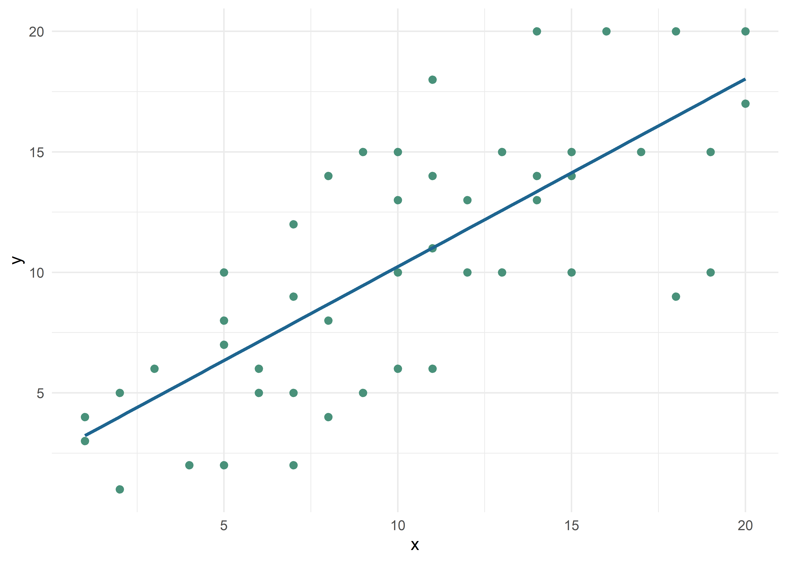
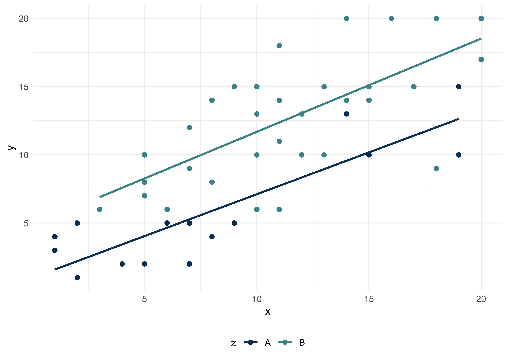
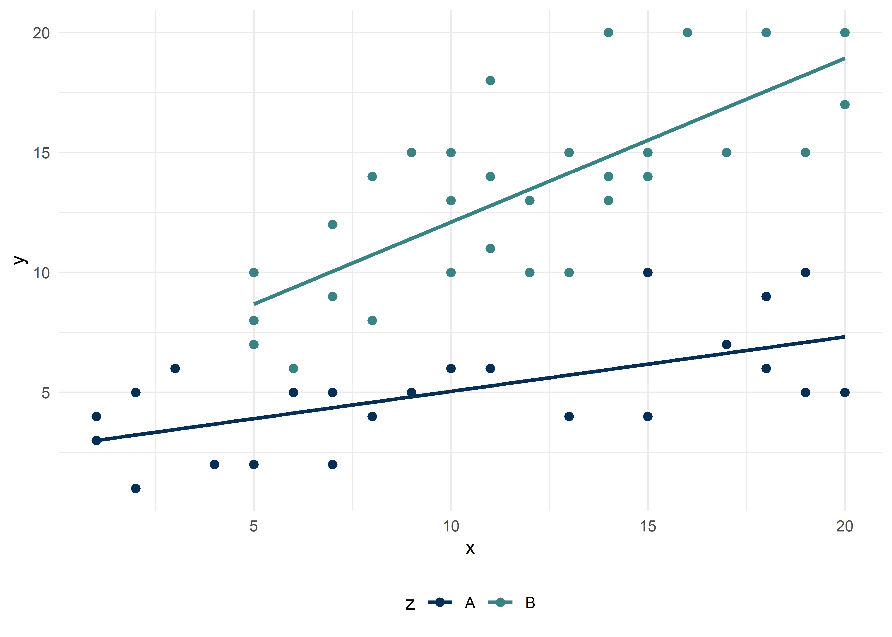

Regresión Lineal Múltiple
Este material es parte de la Unidad 3 del Curso de Epidemiología - Nivel Avanzado del Instituto Nacional de Epidemiología “Dr. Juan H. Jara” - ANLIS
Estudios ecológicos por Andrea Silva, Christian Ballejo y Tamara Ricardo bajo licencia CC BY-NC 4.0 


Introducción
Los modelos de Regresión Lineal Múltiple (RLM) son típicamente empleados cuando la variable dependiente (también llamada variable respuesta, resultado o desenlace) es continua. Las variables independientes (variables explicativas, covariables o predictores) pueden ser tanto continuas como categóricas. A su vez las variables categóricas pueden ser dicotómicas, ordinales o tener múltiples niveles, siendo tratadas, en esta situación, como variables dummy (según veremos más adelante).
Así como la RLS nos permite estimar el efecto bruto de una variable independiente sobre una variable respuesta, la RLM nos permite conocer el efecto conjunto de dos o más variables independientes (\(X_1\), \(X_2\),…\(X_k\)) sobre la variable respuesta (\(Y\)). De esta manera podemos decir que la RLM nos permite:
Analizar la dirección y fuerza de la asociación entre la variable dependiente y las variables independientes.
Determinar cuáles variables independientes son importantes en la predicción/explicación de la variable dependiente.
Describir la relación entre una o más variables independientes controlando por el efecto de las otras variables independientes (confusión).
Identificar si la relación de la variable respuesta y una variable independiente cambia de acuerdo al nivel de otra variable independiente (interacción).
El modelo estadístico de la RLS que expresa la relación entre \(X\) e \(Y\) es:
\[ Y = \beta_0 + \beta_1X_1 \]
La representación gráfica de dicha relación es una recta de ajuste que se realiza en un plano (2 dimensiones).
El modelo estadístico de la RLM es:
\[ Y = \beta_0 + \beta_1X_1 + \beta_2X_2 + ...+\beta_kX_k \]
Donde \(\beta_0\), \(\beta_1\), \(\beta_2\),…,\(\beta_k\) son los parámetros de la regresión. Para cada combinación de valores de \(X_1\), \(X_2\),…\(X_k\) existe una distribución \(Y\) cuya media es una función lineal de \(X_1\), \(X_2\),…, \(X_k\).
La representación gráfica de la recta de ajuste se realiza en el espacio de dimensión \(K + 1\) (donde \(K\) es el número de variables). Recordamos que en el caso de la RLS, podíamos representarla en un plano (2 dimensiones), en el caso de la RLM, se nos dificulta la representación espacial si el modelo tuviera más de 2 variables.
En el caso puntual que el modelo tuviera 2 variables independientes, la ecuación sería:
\[ Y = \beta_0 + \beta_1 X_1 + \beta_2X_2 \]
Y podríamos representarlo en un plano como:
En forma similar a la RLS, la interpretación de cada parámetro \(\beta\) de la regresión es:
\(\beta_0\): es el valor esperado de \(Y\) cuando todas las otras variables son iguales a cero.
\(\beta_1\) es la pendiente a lo largo del eje \(X_1\) y representa el cambio esperado en la respuesta por unidad de cambio en \(X_1\) a valores constantes de \(X_2\).
\(\beta_2\) es la pendiente a lo largo del eje \(X_2\) y representa el cambio esperado en la respuesta por unidad de cambio en \(X_2\) a valores constantes de \(X_1\).
Presupuestos del modelo de RLM
Independencia
Las observaciones \(Y_i\) son independientes unas de otras: el efecto de \(X_1\) sobre la respuesta media no depende de \(X_2\) y viceversa, siempre y cuando no exista interacción. Cuando existe interacción entre \(X_1\) e \(X_2\) , el efecto de \(X_1\) sobre la respuesta media de \(Y\) depende \(X_2\) y viceversa (\(X_1\) e \(X_2\) no son independientes cuando existe interacción).
Linealidad
Para cada combinación de valores de las variables independientes (\(X_1\), \(X_2\),…, \(X_k\)) el valor medio de \(Y\) es función lineal de \(X_1\), \(X_2\),…,\(X_k\).. La linealidad se define en relación a los coeficientes de la regresión, por lo tanto el modelo puede incluir términos cuadráticos e interacciones
- Modelo con interacción
\[ Y = \beta_0X_1 + \beta_2X_2 + \beta_3X_1X_2 \]
Modelo con términos cuadráticos
\[ Y = \beta_0 + \beta_1X_1 + \beta_2X_2 + \beta_3X_1^2 + \beta_4X_2^2 \]
Homocedasticidad
la varianza de \(Y\) para los distintos valores de \(X_1\), \(X_2\),…,\(X_k\) se mantiene constante.
Normalidad
Los valores de \(Y\) tienen una distribución normal según los valores de \(X_1\), \(X_2\), \(X_k\) , ésto nos permite realizar inferencias en relación a los parámetros del modelo.
Al igual que en la RLS la estimación de los parámetros de la regresión (coeficientes) se realiza mediante el Método de los Mínimos Cuadrados (MMC).
El MMC consiste en adoptar como estimativas de los parámetros de la regresión los valores que minimicen la suma de los cuadrados de los residuos.
\[ \sum_{i=1}^{i=n}e_1^2=\sum_{i=1}^{i=n}(Y_i-\hat{Y_i})^2=\sum_{i=n}^{i=n}(Y_i-(\hat{\beta}_0+\hat{\beta}_1X_1+\dots+\hat{\beta}_kX_k))^2 \]
Interpretación de un modelo de RLM
Comenzaremos aprendiendo a interpretar un modelo de RLM, para luego aprender a construirlos. Para ello, observemos detalladamente la salida de R para un modelo de RLM, donde modelamos la V23, en función de las variables V10, V11, V12, V14, V15, V17, V18 y V24.
Call:
lm(formula = V23 ~ ., data = data)
Residuals:
Min 1Q Median 3Q Max
-2.45958 -0.57136 0.05354 0.57868 2.25036
Coefficients:
Estimate Std. Error t value Pr(>|t|)
(Intercept) 0.09504 0.09502 1.000 0.3199
V10 -0.05189 0.09725 -0.534 0.5950
V11 -0.11508 0.09711 -1.185 0.2391
V12 -0.08137 0.09151 -0.889 0.3763
V14 -0.16411 0.09738 -1.685 0.0954 .
V15 -0.03240 0.10283 -0.315 0.7534
V17 -0.04053 0.09040 -0.448 0.6550
V18 0.14425 0.09456 1.525 0.1306
V24 -0.04953 0.08940 -0.554 0.5809
---
Signif. codes: 0 '***' 0.001 '**' 0.01 '*' 0.05 '.' 0.1 ' ' 1
Residual standard error: 0.9081 on 91 degrees of freedom
Multiple R-squared: 0.09027, Adjusted R-squared: 0.0103
F-statistic: 1.129 on 8 and 91 DF, p-value: 0.3518Donde:
Estimate: muestra los coeficientes \(\beta\) estimados para el intercepto (\(\beta_0\)) y cada una de las variables explicativas (\(\beta_i\)),
Std. Error: error estándar de cada coeficiente \(\beta\),
t-value: valores del test \(F\) parcial,
Pr(>|t|) : \(p\)-valores para el test \(F\) parcial,
Residual standard error: error estándar de los residuales,
Multiple R-squared: \(R^2\) múltiple,
Adjusted R-squared: \(R^2\) ajustado,
F-statistic: resultados del test \(F\) global y su \(p\)-valor
Profundicemos ahora en lo que significan algunos de estos puntos.
Test F parcial
Como estamos sacando conclusiones partiendo de una muestra, es obvio que distintas muestras van a dar distintos valores de los parámetros. Es por eso que el test \(F\) parcial, testea la siguiente afirmación o hipótesis:
\[ H_0 = \beta_1 = \beta_2 = ... \beta_n = 0\]
\[ H_1 = \exists\beta_i \neq 0 \]
Donde \(H_1\) indica que existe al menos un coeficiente \(\neq\) 0
De alguna forma, evalúa la contribución de cada variable al modelo. Nos dice si la inclusión de esa variable es útil para explicar significativamente la variabilidad observada en \(Y\). En los modelos lineales generalizados (GLM por sus siglas en inglés), el test de Wald testea esta \(H_0\). Para RLM, el test \(F\) parcial es idéntico a Wald.
Varianza residual
Como vimos en ANOVA y al igual que en el caso de regresión lineal simple, vamos a descomponer la variabilidad de la variable dependiente \(Y\) en dos componentes o fuentes de variabilidad: un componente va a representar la variabilidad explicada por el modelo de regresión y el otro componente va a representar la variabilidad no explicada por el modelo y, por tanto, atribuida a factores aleatorios.
\[ Variabilidad \ total = Variabilidad \ regresión \ + \ Variabilidad \ residual \]
Del mismo modo, podemos decir que la suma de cuadrados totales (SCT) es igual a la suma de cuadrados de la regresión (SCR) y la suma de cuadrados residuales (SCR)
\[ \sum (y_i-\bar{y})^2 = \sum (\hat{y}-\bar{y})^2 + \sum (y_i -\hat{y}_i)^2 \]
\[ SCT = SCR + SCE \]
Recordemos que cada uno de estos términos, se divide por sus grados de libertad para obtener los cuadrados medios correspondientes (CMT/CMR/CME)
| Grados de libertad | CM |
|---|---|---|
SCT | n-1 | CMT = SCT/n-1 |
SCR | k-1 | CMR = SCR/k-1 |
SCE | n-k-1 | CME = SCE/n-k-1 |
Test F global
Compara el modelo de regresión con el modelo nulo. Evalúa el efecto conjunto de las variables independientes incluidas en el modelo ajustado.
\[ F = CMR/CME \quad gl = (k -1, n - k - 1) \]
Coeficiente de determinación
Al igual de lo que aprendimos en la RLS la bondad de ajuste del modelo de RLM se valora con el coeficiente de determinación (\(R^2\)), que nos dice qué proporción de la variabilidad de \(Y\) es explicada por los coeficientes de la regresión del modelo en estudio. El \(R^2\) es útil para comparar entre modelos
\[ R^2 = \frac{SCT-SCE}{SCT}=\frac{SCR}{SCT} \]
Sin embargo, en el caso de la RLM, en donde deseamos incluir en el modelo más de una variable independiente, el \(R^2\) siempre va a mejorar al agregar una nueva variable, aunque su inclusión no mejore sustancialmente el modelo. El \(R^2\) más grande se obtiene por el simple hecho de incluir todas las variables disponibles, pero la mejor ecuación de regresión múltiple no necesariamente utiliza todas las variables. El \(R^2\) ajustado o corregido tiene esta expresión:
\[ R^2_a = 1 - \bigg [ \frac{n-1}{n-(k+1)}\bigg]\frac{SCE}{SCT}=1-\bigg[\frac{n-1}{n-(k+1)}\bigg](1-R^2) \]
Teniendo en cuenta que 1-\(R^2\) es un número constante y que \(n\) es mayor que \(k\), a medida que añadimos variables al modelo, el cociente entre paréntesis se hace más grande. Consecuentemente, también el resultado de multiplicar este por 1-\(R^2\). Con lo cual vemos que la fórmula está construida para ajustar y penalizar la inclusión de coeficientes en el modelo.
Nota
Cuando tenemos que elegir el mejor modelo será necesario utilizar distintos criterios para compararlos y basar nuestra decisión en elegir el modelo que mejor explique la variación de \(Y\) con el menor número de variables independientes, el modelo más simple y efectivo, también llamado el modelo más parsimonioso.
Confusión e interacción en RLM
Antes de aprender a construir modelos de regresión, vamos a repasar algunos conceptos.
Los estudios epidemiológicos suelen partir de modelos teóricos conocidos y vinculados al tema que se está estudiando. Las variables de interés que se recolectan surgen en la elaboración de los estudios y todas ellas cumplen con un rol hipotético que queremos probar. Solemos distinguir dos variables principalesy excluyentes: la exposición (variable independiente) y el resultado (variable dependiente). Una vez seleccionadas estas dos variables, las otras variables del estudio (medidas o no medidas) se denominan covariables.
Las covariables, dentro del proceso salud-enfermedad, pueden tener varios roles, tales como confusoras, mediadoras de efecto, intermedias, colisionadoras, exposiciones en competencia, etc. Aplicado al tema de investigación sobre el que estemos trabajando, algunos de estos roles serán conocidos previamente por la literatura y otros hallados o sospechados durante el análisis.
Confusión
Una variable de confusión es una variable que distorsiona la medida de asociación entre las variables principales. El resultado, en presencia de una variable de confusión, puede ser la observación de:
- Efecto donde en realidad no existe (asociación espuria)
- Exageración o atenuación de una asociación real (confusión positiva)
- Inversión del sentido de una asociación real (confusión negativa).
Según Gordis (2017), en un estudio sobre si la exposición x es una causa de la enfermedad y, se dice que un tercer factor, el factor z, es un factor de confusión si se cumple lo siguiente:
- El factor
zes un factor de riesgo conocido para la enfermedady. - El factor
zse asocia con la exposiciónx, pero no es un resultado de la exposiciónx.
Para conceptualizar este y otros mecanismos en epidemiología se suele utilizar graficos acíclicos dirigidos (DAGs en inglés). Su nombre se debe a que no forman un ciclo cerrado y las variables están unidas por flechas dirigidas.

Para quienes necesitan repasar este tema, pueden leer el artículo de De Irala, Martínez-González, and Guillén Grima (2001) accediendo desde aquí.
Dentro de las estrategias para manejar la confusión, podemos pensar en dos momentos:
- A la hora de diseñar y llevar a cabo el estudio:
- Emparejamiento individual.
- Emparejamiento de grupo.
- Al momento de analizar los datos:
- Estratificación.
- Ajuste.
El ajuste estadístico es la propiedad de los análisis multivariados por la que se determina la influencia específica de cada variable independiente sobre la variable dependiente al mantener el resto de variables constantes.
En términos generales, se habla de confusión cuando existen diferencias estadísticas importantes entre las estimaciones brutas de una asociación y las ajustadas por los posibles factores de confusión. Existe un consenso en la bibliografía: un factor puede considerarse de confusión cuando su ajuste es responsable de un cambio de al menos un 10% en la magnitud de la diferencia entre las estimaciones ajustadas y las brutas.
En muchos estudios epidemiológicos, la edad y el sexo son variables que juegan roles de confusión y generalmente son pocos los trabajos que no presentan datos ajustados por estas covariables.
Durante el curso vamos a utilizar la regresión lineal y otras regresiones lineales generalizadas para resolver la confusión ajustando los efectos de múltiples variables.
Si lo mirásemos desde el punto gráfico de los datos podríamos partir de un diagrama de dispersión de puntos, con la variable dependiente de nombre y y la variable independiente de nombre x.

Observamos que la recta de regresión muestra una correlación positiva entre los valores de las variables, representando la ecuación:
\[\hat{y} = b_0 + b_1x_1 + \epsilon\]
Un posible resultado resumen en R de esta regresión se muestra en la siguiente salida de consola.
Call:
lm(formula = y ~ x, data = datos_conf)
Residuals:
Min 1Q Median 3Q Max
-7.4701 -2.4124 -0.0179 2.5926 6.9821
Coefficients:
Estimate Std. Error t value Pr(>|t|)
(Intercept) 2.45017 1.13262 2.163 0.0354 *
x 0.77889 0.09642 8.078 1.45e-10 ***
---
Signif. codes: 0 '***' 0.001 '**' 0.01 '*' 0.05 '.' 0.1 ' ' 1
Residual standard error: 3.559 on 49 degrees of freedom
Multiple R-squared: 0.5712, Adjusted R-squared: 0.5624
F-statistic: 65.26 on 1 and 49 DF, p-value: 1.45e-10El intercepto (\(b_0\)) es de 2,45 y el coeficiente \(b_1\) (pendiente) significativo de 0,78 que explica un 56% de los valores de y (\(R^2\))
En la ecuación el valor de y en la recta es 2,45 (\(b_0\)) + 0,78* el valor de x (\(b_1*x\)).
Ahora incorporemos la covariable z, con categorías A y B, que sospechamos tiene un rol de confusión en el modelo teórico.

El gráfico de dispersión muestra que hay una diferencia entre las rectas de regresión que se mantiene prácticamente constante (paralelas) en todo su desarrollo. Esa distancia medida en valores de y es \(b_2\), para la ecuación:
\[\hat{y} = b_0 + b_1x_1 + b_2x_2 + \epsilon\]
Visto en resultados de consola:
Call:
lm(formula = y ~ x + z, data = datos_conf)
Residuals:
Min 1Q Median 3Q Max
-7.958 -1.502 -0.225 1.840 5.652
Coefficients:
Estimate Std. Error t value Pr(>|t|)
(Intercept) 0.65684 1.00484 0.654 0.516
x 0.65260 0.08372 7.795 4.49e-10 ***
zB 4.55436 0.93258 4.884 1.20e-05 ***
---
Signif. codes: 0 '***' 0.001 '**' 0.01 '*' 0.05 '.' 0.1 ' ' 1
Residual standard error: 2.939 on 48 degrees of freedom
Multiple R-squared: 0.7135, Adjusted R-squared: 0.7016
F-statistic: 59.77 on 2 and 48 DF, p-value: 9.347e-14El coeficiente \(b_1\) de la variable independiente principal x varió al incorporar la nueva variable z, pasando de 0,78 (cruda) a 0,65 (ajustada), es decir que disminuyó casi un 20%. A la vez, la covariable tiene una relación significativa con la variable dependiente y y el modelo aumenta el \(R^2\) ajustado a 0,70.
Entonces podemos ver que la regresión multiple ajustó el efecto de x sobre y, teniendo en cuenta el efecto confusor de z que sospechabamos.
El valor de y ahora es 0,66 (\(b_0\)) + 0,65* el valor de x (\(b_1*x\)) mientras z es igual al nivel de referencia A, en cambio y vale 0,66 (\(b_0\)) + 0,65* el valor de x (\(b_1*x\)) + 4,55 (\(b_2\)) cuando z es igual a B.
Interacción o modificación de efecto
MacMahon (1972) definió la interacción de la siguiente manera:
El efecto puede ser mayor de lo esperado (interacción positiva, sinergismo) o menor de lo esperado (interacción negativa, antagonismo).
Entonces la modificación del efecto ocurre cuando el tamaño del efecto de la variable explicativa de interés (exposición) sobre el resultado (variable dependiente) difiere según el nivel de una tercera variable.
Para quienes necesiten profundizar el tema, pueden leer el documento de Irala, Martı́nez-González, and Grima (2001) del siguiente [Link]
Es importante destacar que mediante la RLM es posible identificar la presencia de modificadores de efecto mediante la inclusión de términos de interacción.
Seguramente recordarán de cursos previos de epidemiología, que frente a un modificador de efecto (ME) lo más adecuado era presentar las medidas de asociación según los estratos formados por las categorías de la variable ME (no estimar una medida ajustada para ambos estratos, como se hace en caso de variables confusoras).
Al ajustar un modelo de RLM podemos incluir un término de interacción en la ecuación (que es el producto de ambas variables), el cual representa una nueva variable. El término de interacción implica el exceso de la variabilidad de los datos que no puede ser explicada por la suma de las variables consideradas.
Un ejemplo similar al recién mostrado para la confusión, pero para la interacción podría ser:
\[\hat{y} = b_0 + b_1x_1 + \epsilon\]
Partimos de esta relación entre x e y representada por la recta de la ecuación con los valores de la siguiente tabla:
Call:
lm(formula = y ~ x, data = datos_int)
Residuals:
Min 1Q Median 3Q Max
-9.8410 -3.8804 0.3709 3.2871 8.4102
Coefficients:
Estimate Std. Error t value Pr(>|t|)
(Intercept) 4.0035 1.4065 2.847 0.0062 **
x 0.5419 0.1132 4.789 1.31e-05 ***
---
Signif. codes: 0 '***' 0.001 '**' 0.01 '*' 0.05 '.' 0.1 ' ' 1
Residual standard error: 4.554 on 55 degrees of freedom
Multiple R-squared: 0.2943, Adjusted R-squared: 0.2814
F-statistic: 22.93 on 1 and 55 DF, p-value: 1.307e-05El intercepto (\(b_0\)) es de 4,0 y el coeficiente \(b_1\) (pendiente) significativo de 0,54.
Ahora incorporemos la covariable z, con categorías A y B, que sospechamos tiene un rol de interacción.

El gráfico de dispersión muestra que hay una diferencia entre las rectas de regresión que tienen distintas pendientes según el valor de z. Esa diferencia no es aditiva y pasa a ser multiplicativa y da lugar a la ecuación:
\[\hat{y} = b_0 + b_1x_1 + b_2x_2 + b_3x_1x_2 + \epsilon\]
Visto en resultados de consola:
Call:
lm(formula = y ~ x * z, data = datos_int)
Residuals:
Min 1Q Median 3Q Max
-4.1427 -1.8739 -0.4598 1.3199 5.2230
Coefficients:
Estimate Std. Error t value Pr(>|t|)
(Intercept) 2.77269 0.91587 3.027 0.003804 **
x 0.22708 0.07719 2.942 0.004830 **
zB 2.49329 1.51850 1.642 0.106522
x:zB 0.45574 0.12213 3.732 0.000465 ***
---
Signif. codes: 0 '***' 0.001 '**' 0.01 '*' 0.05 '.' 0.1 ' ' 1
Residual standard error: 2.364 on 53 degrees of freedom
Multiple R-squared: 0.8168, Adjusted R-squared: 0.8064
F-statistic: 78.75 on 3 and 53 DF, p-value: < 2.2e-16El término de interacción es significativo, aunque la variable z pareciese que no, es decir la significación se asocia a uno de los niveles (la categoría B). No hay manera de escindir un nivel del otro por lo que debemos dejar la variable z. A su vez aumentó el \(R^2\) ajustado del modelo de 0,28 a 0,80.
El valor de y en este caso es 2,77 (\(b_0\)) + 0,23* el valor de x (\(b_1*x\)) mientras z es igual al nivel de referencia A, en cambio y vale 2,77 (\(b_0\)) + 0,23* el valor de x (\(b_1*x\)) + 2,49 (\(b_2\)) + 0,46*x (\(b_3*x\)) cuando z es igual a B. Observamos una sinergia entre el nivel B de la variable z y la variable x en el efecto causado a la variable y.
Variables dummy
Recordemos que en el modelo de regresión podemos incluir como variables independientes tanto variables cuantitativas como variables categóricas. Las variables categóricas pueden ser dicotómicas (sexo: fem/masc; hábito de fumar: si/no) o tener más de dos categorías, por ejemplo: grupo sanguíneo, religión, color de ojos.
Para ser modeladas: cada categoría se transforma en una variable dicotómica (\(n\) de categorías -1) donde \(1 =\) tener esa característica. Se utiliza como grupo basal (no expuestos) a la categoría de menor valor. Cuando las variables cualitativas no ordinales sufren esta transformación se denominan variables dummy.
Veamos un ejemplo con una variable cualitativa dicotómica Hábito de Fumar (1: si 0: no):
Al ajustar un modelo con la variable Hábito de Fumar (1: si 0: no) el modelo quedaría:
\[ Y = b_0+b_1F_1 \]
\(b_1\) es la variación que experimentará \(Y\) en caso de que el individuo fume.
Veamos un ejemplo con la variable “región” con 3 categorías: Noreste (NE), Norte (N), Centro Oeste (CO).
Para modelarlas la transformaremos en 2 categorías: \(Re_1\) y \(Re_2\) (\(n\) categorías -1)
Región | RE1 | RE2 |
|---|---|---|
NE (basal) | 0 | 0 |
N | 1 | 0 |
CO | 0 | 1 |
\(Re_1\)=1 si vive en el norte
\(Re_1\)=0 si vive en otra región
\(Re_2\)=1 si vive en el CO
\(Re_2\)=0 si vive en otra región
Ahora imaginemos el modelo de regresión entre \(Y\) y la variable “región” (supongamos que \(Y\) es la Tasa de Mortalidad Infantil)
\[ Y = b_0+b_1Re_1 + b_2Re_2 \]
Para interpretar el modelo, cuando consideremos la región norte (\(Re_1\)=1 y \(Re_2\)=0) la ecuación será:
\[ Y=b_0+b_1Re_1 \]
Cuando consideremos la región CO (\(Re_1\)=0 y \(Re_2\)=1) la ecuación será:
\[ Y=b_0+b_2Re_2 \]
Cuando consideremos la región NE (\(Re_1\)=0 y \(Re_2\)=0) la ecuación será:
\[ Y=b_0 \]
El coeficiente \(b_1\) y \(b_2\) nos estarán indicando cuánto se modifica la TMI según consideremos la región N o CO. El coeficiente \(b_0\) es el valor basal medio de la TMI considerada en la región NE.
Las variables dummy (también llamadas variables indicadoras) no tienen ningún sentido por sí solas y, por lo tanto, deben figurar todas las categorías en los modelos y se debe contrastar su inclusión siempre en bloque, aunque el test \(F\) parcial para alguna categoría resulte no significativo. Hay que notar que cuando se agrega una variable dummy al modelo, ésta le suma tantos grados de libertad a la regresión como categorías tenga.
Estimación y predicción
Los modelos de regresión se pueden utilizar esencialmente:
Con fines explicativos: obtener estimativas precisas sobre variables de interés para realizar inferencias o cuantificar relaciones entre variables controlando por otras variables)
Con fines predictivos: a partir de los datos de una muestra predecir el comportamiento de \(Y\) según posibles valores de \(X_k\).
Es importante tener en cuenta que si el propósito es construir un modelo predictivo a partir de una ecuación de regresión debe tener en cuenta:
- Si no existe una correlación lineal, no utilice la ecuación de regresión para hacer predicciones. En ese caso el mejor predictor de los datos será su media muestral. Sólo haga predicciones si la ecuación de regresión es un buen modelo para los datos.
- No haga predicciones en base a valores que rebasen las fronteras de los datos muestrales conocidos.
- Debe estar basada en datos actualizados
- No haga predicciones acerca de una población distinta de la población de donde se obtuvieron los datos muestrales.
- La relación entre la variable respuesta y la predictora no debe ser necesariamente causal. En cambio cuando el objetivo del modelo es explicativo la relación causal (particularmente la relación temporal entre la variable dependiente y la independiente) debe existir.
Lineamientos para el uso de la ecuación de regresión
Dada una variable dependiente \(Y\) y un conjunto de \(k\) variables independientes \(X_1\), \(X_2\), \(X_3\)….,\(X_k\) ¿cuál es el mejor conjunto de \(p\) predictores (\(p \leq k\)) y el correspondiente modelo de regresión para describir la relación entre \(Y\) y las variables \(X\)?
Pasos para escoger la mejor ecuación de regresión:
- Especificar el conjunto de variables potencialmente predictivas/explicativas y la forma del modelo
- Especificar un criterio estadístico para la elección de las variables
- Especificar una estrategia para seleccionar modelos
- Conducir el análisis específico
- Evaluar los presupuestos del modelo
- Evaluar la confiabilidad del modelo escogido
Especificar el conjunto de variables potencialmente predictivas y la forma del modelo
La finalidad es buscar de entre todas las posibles variables explicativas aquellas que más y mejor expliquen a la variable dependiente sin que ninguna de ellas sea combinación lineal de las restantes. Con este propósito primero identificaremos las relaciones entre la variable dependiente y las independientes de manera bivariada; y la relación entre las variables independientes entre sí, con el fin de identificar la presencia de colinelidad.
Colinealidad
Un problema frecuente en los modelos de RLM es el de la multicolinealidad, que ocurre cuando los regresores están relacionados entre sí en forma lineal. Si bien no implica una violación de las hipótesis o presupuestos del modelo, puede ocasionar problemas en la inferencia, ya que:
Aumenta las varianzas y covarianzas de los estimadores
Los errores de las estimaciones serán grandes
Tiende a producir estimadores con valores absolutos grandes
Los coeficientes de cada variable independiente difieren notablemente de los que se obtendrían por RLS
No se puede identificar de forma precisa el efecto individual de cada variable colineal sobre la variable respuesta
Por consiguiente, a la hora de plantear modelos de RLM conviene estudiar previamente la existencia de casi-colinealidad (la colinealidad exacta no es necesario estudiarla previamente, ya que todos los algoritmos la detectan, de hecho no pueden acabar la estimación). Como medida de la misma hay varios estadísticos propuestos:
Podemos examinar la matriz de correlación
Realizar gráficos de dispersión entre las variables explicativas/predictivas
Cálculo del factor de inflación de la varianza (VIF por sus siglas en inglés):
\[ VIF = \frac{1}{1-R^2_i} \]
Una regla empírica, citada por Kleinbaum et al. (1988), consiste en considerar que existen problemas de colinealidad si algún VIF es superior a 10. Por otro lado Kim (2019) considera que un VIF entre 5 y 10 indican la presencia de colinealidad. En caso de detectar colinealidad entre dos predictores, existen dos posibles soluciones:
Excluir uno de los predictores problemáticos intentando conservar el que, a juicio del investigador, está influyendo realmente en la variable respuesta
Combinar las variables colineales en un único predictor, aunque con el riesgo de perder su interpretación
Especificar un criterio estadístico para elección de variables
Generalmente incluiremos en el modelo aquellas variables que resultaron significativas en el análisis bivariado y otras que, aun cuando no resultaran significativas, decidamos mantener por cuestiones teóricas, porque se necesitan establecer predicciones para distintas categorías de dicha variable, etc.
El proceso de selección de variables puede realizarse en forma manual o automática, siendo este último desaconsejado por la mayoría de los autores, ya que en el proceso de ajuste de un modelo no sólo se involucran criterios estadísticos sino también conceptuales. Existen tres estrategias para realizar el proceso , basadas en el valor del test \(F\) parcial:
Método jerárquico o forward: se basa en el criterio del investigador que introduce predictores determinados en un orden específico en relación al marco teórico. Comienza con un modelo nulo que solo contiene el intercepto (\(\beta_0\)) y agrega secuencialmente una variable a la vez, eligiendo la que proporciona el mayor beneficio en términos de ajuste del modelo. Este proceso continúa hasta que agregar más variables no mejore significativamente el ajuste del modelo.
Método de entrada forzada o backward: es el método inverso al anterior. Se introducen todos los predictores simultáneamente y, en cada paso, elimina la variable que tenga el menor impacto en el ajuste del modelo. Este proceso continúa hasta que eliminar más variables no mejore significativamente el ajuste del modelo. Permite evaluar cada variable en presencia de las otras.
Método paso a paso o stepwise: emplea criterios matemáticos para decidir qué predictores contribuyen significativamente al modelo y en qué orden se introducen. Se trata de una combinación de la selección forward y backward. Comienza con un modelo nulo, pero tras cada nueva incorporación se realiza un test de extracción de predictores no útiles como en el backward. Presenta la ventaja de que si a medida que se añaden predictores, alguno de los ya presentes deja de contribuir al modelo, se elimina.
Especificar una estrategia para seleccionar modelos
Hasta ahora hemos desarrollado algunos criterios que se pueden utilizar para comparar modelos como \(R^2\), \(R^2\) ajustado y \(F\) global. Como hemos mencionado anteriormente el uso de \(R^2\) como único criterio de selección tiene varias desventajas: tiende a sobreestimar, al adicionar variables siempre aumenta, por lo que si fuera el único criterio elegiría modelos con el mayor número de variables, no tiene en consideración la relación entre parámetros y tamaño muestral.
Para modelos anidados, podemos realizar una comparación entre ambos modelos mediante un ANOVA. Existen otros criterios como el Criterio de Información de Akaike (AIC), el Criterio de Información Bayesiano (BIC), etc. Tanto el BIC como el AIC, son funciones del logaritmo de la verosimilitud y un término de penalidad basado en el número de parámetros del modelo.
Recuerden que frente a \(p\) variables independientes existen \(2^p\) posibles modelos. No necesariamente el modelo con mayor número de variables es el mejor. Debemos priorizar siempre el principio de parsimonia (el modelo más simple que mejor explique). El tamaño de la muestra también es importante, algunos autores recomiendan que el número de observaciones sea como mínimo entre 10 y 20 veces el número de predictores del modelo.
Validación y diagnóstico del modelo
En este apartado vamos a comprobar que se verifican los supuestos del modelo de regresión lineal (normalidad, homocedasticidad o igualdad de varianzas, linealidad), ya que estos supuestos resultan necesarios para validar la inferencia respecto a los parámetros. Utilizaremos el análisis de los residuales para realizar los contrastes a posteriori de dichas hipótesis del modelo. Recordemos que los residuos se definen como la diferencia entre el valor observado y el valor predicho por el modelo.
\(y-\hat{y}=e\) (residuo o error residual)
El planteamiento habitual es considerar que, como dijimos inicialmente, los valores de \(Y\) tienen una distribución normal según los valores de \(X_1\), \(X_2\),… \(X_k\)., entonces, los residuos también tendrán una distribución normal. Los residuos tienen unidades de medida y, por tanto no se puede determinar si es grande o pequeño a simple vista. Para solucionar este problema se define el residuo estandarizado como el cociente entre el residuo y su desvío standard. Se considera que un residuo tiene un valor alto, y por lo tanto puede influir negativamente en el análisis, si su residuo estandarizado es mayor a 3 en valor absoluto. También se trabaja con los residuos tipificados o con los residuos estudentizados.
Normalidad
El análisis de normalidad de los residuos lo realizaremos gráficamente (Histograma y gráfico de probabilidad normal) y analíticamente (Contraste de Kolmogorov-Smirnov) o similar.
Homocedasticidad
La hipótesis de homocedasticidad establece que la variabilidad de los residuos es independiente de las variables explicativas. En general, la variabilidad de los residuos estará en función de las variables explicativas, pero como las variables explicativas están fuertemente correlacionadas con la variable dependiente, bastara con examinar el gráfico de valores pronosticados versus residuos (a veces residuos al cuadrado).
Comprobamos la hipótesis de homogeneidad de las varianzas gráficamente representando los residuos tipificados frente a los valores predichos por el modelo. El análisis de este gráfico puede revelar una posible violación de la hipótesis de homocedasticidad, por ejemplo si detectamos que el tamaño de los residuos aumenta o disminuye de forma sistemática para algunos valores ajustados de la variable \(Y\), si observamos que el gráfico muestra forma de embudo. Si por el contrario dicho gráfico no muestra patrón alguno, entonces no podemos rechazar la hipótesis de igualdad de varianzas.
Linealidad
Se evalúa en el mismo gráfico anterior (además de considerar \(R^2\) ajustado)
Valores de influencia (leverage)
Se considera que una observación es influyente a priori si su inclusión en el análisis modifica sustancialmente el sentido del mismo. Una observación puede ser influyente si es un outlier respecto a alguna de las variables explicativas. Para detectar estos problemas se utiliza la medida de Leverage:
\[ l(i)=\frac{1}{n}\bigg(1+\frac{(x_i-\bar{x})^2}{S^2_x}\bigg) \]
Este estadístico mide la distancia de un punto a la media de la distribución. Valores cercanos a 2/\(n\) indican casos que pueden influir negativamente en la estimación del modelo introduciendo un fuerte sesgo en el valor de los estimadores.
Distancia de Cook
Es una medida de cómo influye la observación i-ésima sobre la estimación de \(\beta\) al ser retirada del conjunto de datos. Una distancia de Cook grande significa que una observación tiene un peso grande en la estimación de \(\beta\). Son puntos influyentes las observaciones que presenten
\[ D_i=\frac{4}{n-p-2} \]
Independencia de residuos
La hipótesis de independencia de los residuos la realizaremos mediante el contraste de Durbin-Watson.
Ejemplo práctico en lenguaje R
En el documento inicial de Estudios ecológicos vimos como generar en R una fórmula para la regresión lineal simple:
\[ variable \ dependiente \; \sim variable \ independiente \]
Para generar fórmulas que contengan más de una variable independiente o predictora (necesario para que sea una regresión lineal múltiple) debemos agregarlas mediante el símbolo \(+\)
\[ variable \ dependiente \ \sim var\_indepen\_1 \ + \ var\_indepen\_2 \ + \; \dots \ + \ var\_indepen\_n \]
Si luego de la \(~\) incluímos un punto como notación de “todas”, estamos creando un modelo saturado con todas las variables incluidas dentro del dataframe:
lm(variable_dependiente ~ ., data)
Esto es útil cuando tenemos muchas posibles variables explicativas y queremos conocer cuáles tienen una correlación significativa.
También se puede descartar alguna o algunas variables explicativas en particular basado en la misma estructura, mediante el símbolo \(-\)
lm(variable_dependiente ~ . -variable_indepen_x, data)
En la línea anterior, incluimos dentro del modelo a todas las variables de data menos variable_indepen_x.
A continuación mostraremos un ejemplo en lenguaje R a partir de un dataset ficticio llamado cardiopatias. El mismo contiene datos agregados sobre el porcentaje de personas que van en bicicleta al trabajo cada día, porcentaje de fumadores y porcentaje de personas con cardiopatías en una muestra imaginaria de 498 ciudades de un país determinado.
Los pasos que trataremos, luego de leer la tabla de datos, son:
- Análisis de variables potencialmente explicativas
- Estrategia de construcción del modelo
- Comparación de modelos
- Colinealidad
- Diagnóstico del modelo (análisis de residuales)
- Resumen del mejor modelo elegido
Lectura de datos y visualización de estructura
Para comenzar, cargamos los paquetes de R necesarios para el análisis:
### Carga paquetes necesarios
# correlación
library(dlookr)
# chequeo de supuestos y análisis de residuales
library(performance)
library(gvlma)
library(lmtest)
library(nortest)
# manejo de datos
library(tidyverse) A continuación leemos los datos guardados en cardiopatias.txt y exploramos su estructura con la función glimpse() de tidyverse:
### Carga datos
datos <- read_csv2("cardiopatias.txt")
### Estructura de datos
glimpse(datos)Rows: 498
Columns: 4
$ ID_ciudad <dbl> 1, 2, 3, 4, 5, 6, 7, 8, 9, 10, 11, 12, 13, 14, 15, 16, 17…
$ ciclistas <dbl> 30.801246, 65.129215, 1.959665, 44.800196, 69.428454, 54.…
$ fumadores <dbl> 10.896608, 2.219563, 17.588331, 2.802559, 15.974505, 29.3…
$ cardiopatias <dbl> 11.769423, 2.854081, 17.177803, 6.816647, 4.062224, 9.550…La tabla de datos contiene 4 variables y 498 observaciones.
Análisis de variables potencialmente explicativas
En este pequeño ejemplo sólo tenemos dos variables potencialmente explicativas : ciclistas y fumadores.
Analizaremos si hay relación entre ellas, y entre cada una y la variable dependiente mediante una matriz de correlación.
Existen muchas funciones para llevar a cabo esta tarea en R. Dado que mostramos previamente la función cor() y cor.test() de R base, en esta oportunidad presentaremos otras funciones más elaboradas pertenecientes al paquete dlookr.
# Tabla de correlación
datos |>
select(-ID_ciudad) |>
correlate() |>
arrange(desc(abs(coef_corr))) # A tibble: 6 × 3
var1 var2 coef_corr
<fct> <fct> <dbl>
1 cardiopatias ciclistas -0.935
2 ciclistas cardiopatias -0.935
3 cardiopatias fumadores 0.309
4 fumadores cardiopatias 0.309
5 fumadores ciclistas 0.0151
6 ciclistas fumadores 0.0151# Gráfico
datos |>
select(-ID_ciudad) |>
correlate() |>
plot()Encontramos de forma analítica y gráfica que existe correlación negativa alta entre cardiopatias y ciclistas, una correlación positiva baja con fumadores, así como una correlación positiva muy baja entre las dos variables independientes.
Estrategia de construcción del modelo
Al momento de seleccionar las variables independientes que formarán parte del modelo, una de las herramientas más utilizadas es el Criterio de Información de Akaike (AIC) que ajusta mediante máxima verosimilitud. Al penalizar la complejidad excesiva, el AIC ayuda a prevenir el sobreajuste y favorece la inclusión de variables relevantes buscando el modelo equilibrado que describa adecuadamente la relación y tenga el mínimo AIC. Podemos consultar el AIC de un modelo en R mediante la función AIC().
Como vimos anteriormente, la selección de variables se puede hacer mediante métodos forward, backward o stepwise. La función step() de R base permite encontrar de forma automática el mejor modelo basado en AIC utilizando cualquiera de las 3 variantes del método paso a paso.
Por otro lado, la función drop1() de R base nos permite realizar un proceso backward manual, eligiendo que variable quitar del modelo en cada caso según su contribución al AIC.
Siempre es oportuno aclarar que estos últimos métodos se basan en cálculos matemático/estadísticos que no tienen en cuenta criterios conceptuales epidemiológicos que surjan del marco teórico, por lo que exigen un control especial del analista.
Como siempre el lenguaje R ofrece una variedad de funciones (algunas base y otras provenientes de paquetes adicionales) para abordar y facilitar la tarea de seleccionar el mejor modelo de regresión (aquel que mejor explique la relación entre variables y que a la vez sea el más simple - principio de parsimonia).
El índice de bondad de ajuste utilizado para compararlos, además del AIC, es el R2 ajustado.
Como consecuencia de tener solo dos variables independientes posibles y a modo didáctico, vamos a crear tres objetos de regresión, dos de ellos regresiones lineales simples y uno de regresión lineal múltiple:
# ciclistas
mod_simple1 <- lm(cardiopatias ~ ciclistas, data = datos)
# fumadores
mod_simple2 <- lm(cardiopatias ~ fumadores, data = datos)
# ciclistas + fumadores
mod_multiple <- lm(cardiopatias ~ ciclistas + fumadores, data = datos)Mediante summary() observamos sus resultados:
# ciclistas
summary(mod_simple1)
Call:
lm(formula = cardiopatias ~ ciclistas, data = datos)
Residuals:
Min 1Q Median 3Q Max
-4.028 -1.206 -0.004 1.151 3.643
Coefficients:
Estimate Std. Error t value Pr(>|t|)
(Intercept) 17.697884 0.146780 120.57 <2e-16 ***
ciclistas -0.199091 0.003378 -58.94 <2e-16 ***
---
Signif. codes: 0 '***' 0.001 '**' 0.01 '*' 0.05 '.' 0.1 ' ' 1
Residual standard error: 1.618 on 496 degrees of freedom
Multiple R-squared: 0.8751, Adjusted R-squared: 0.8748
F-statistic: 3474 on 1 and 496 DF, p-value: < 2.2e-16# fumadores
summary(mod_simple2)
Call:
lm(formula = cardiopatias ~ fumadores, data = datos)
Residuals:
Min 1Q Median 3Q Max
-8.7065 -3.7069 0.5007 3.6597 8.5434
Coefficients:
Estimate Std. Error t value Pr(>|t|)
(Intercept) 7.54311 0.41251 18.286 < 2e-16 ***
fumadores 0.17048 0.02355 7.239 1.73e-12 ***
---
Signif. codes: 0 '***' 0.001 '**' 0.01 '*' 0.05 '.' 0.1 ' ' 1
Residual standard error: 4.352 on 496 degrees of freedom
Multiple R-squared: 0.09556, Adjusted R-squared: 0.09374
F-statistic: 52.41 on 1 and 496 DF, p-value: 1.729e-12# ciclistas + fumadores
summary (mod_multiple)
Call:
lm(formula = cardiopatias ~ ciclistas + fumadores, data = datos)
Residuals:
Min 1Q Median 3Q Max
-2.1789 -0.4463 0.0362 0.4422 1.9331
Coefficients:
Estimate Std. Error t value Pr(>|t|)
(Intercept) 14.984658 0.080137 186.99 <2e-16 ***
ciclistas -0.200133 0.001366 -146.53 <2e-16 ***
fumadores 0.178334 0.003539 50.39 <2e-16 ***
---
Signif. codes: 0 '***' 0.001 '**' 0.01 '*' 0.05 '.' 0.1 ' ' 1
Residual standard error: 0.654 on 495 degrees of freedom
Multiple R-squared: 0.9796, Adjusted R-squared: 0.9795
F-statistic: 1.19e+04 on 2 and 495 DF, p-value: < 2.2e-16En los resúmenes observamos que todos los coeficientes de las variables involucradas son significativas y que los valores mostrados tienen forma de lista, es decir no son tablas “ordenadas” por lo que muchas veces, sobretodo cuando trabajamos con numerosas variables, se hace difícil la comparación de resultados.
Comparación de modelos
Algunas funciones vienen a aportar una solución sencilla para la comparación de modelos. Es el caso de compare_performance() del paquete performance.
compare_performance(mod_simple1,
mod_simple2,
mod_multiple,
metrics = "common")# Comparison of Model Performance Indices
Name | Model | AIC (weights) | BIC (weights) | R2 | R2 (adj.) | RMSE
----------------------------------------------------------------------------------
mod_simple1 | lm | 1896.2 (<.001) | 1908.9 (<.001) | 0.875 | 0.875 | 1.614
mod_simple2 | lm | 2882.1 (<.001) | 2894.7 (<.001) | 0.096 | 0.094 | 4.344
mod_multiple | lm | 995.4 (>.999) | 1012.2 (>.999) | 0.980 | 0.980 | 0.652Las métricas comunes extraídas de los objetos de regresión, presentadas en una tabla, son:
AIC: Criterio de información de AkaikeBIC: Criterio de información bayesianoR2: Coeficiente de determinación \(R^2\)R2 (adj.): Coeficiente de determinación ajustadoRMSE: Error cuadrático medio
En este ejemplo, vemos que el modelo simple de ciclistas es mucho mejor que el modelo simple de fumadores, pero el modelo múltiple que incluye ambas variables tiene un ajuste mejor (menor AIC y RMSE, mayor \(R^2\) ajustado).
También podemos pedirle a la función que nos ordene los modelos de mejor a peor con el argumento rank = TRUE:
compare_performance(mod_simple1,
mod_simple2,
mod_multiple,
metrics = "common",
rank = TRUE)# Comparison of Model Performance Indices
Name | Model | R2 | R2 (adj.) | RMSE | AIC weights | BIC weights | Performance-Score
------------------------------------------------------------------------------------------------
mod_multiple | lm | 0.980 | 0.980 | 0.652 | 1.00 | 1.00 | 100.00%
mod_simple1 | lm | 0.875 | 0.875 | 1.614 | 2.37e-196 | 1.95e-195 | 50.06%
mod_simple2 | lm | 0.096 | 0.094 | 4.344 | 0.00e+00 | 0.00e+00 | 0.00%Colinealidad
Hay varias formas de intuir si hay colinealidad, es decir relación lineal entre nuestras variables independientes.
La primera es analizar el coeficiente de correlación; si tenemos variables altamente relacionadas es muy probable que el modelo pueda tener colinealidad entre esas variables independientes.
Otro de los síntomas se produce cuando nuestro modelo tiene un \(R^2\) alto y muchas variables no son significativas. En estos casos también es muy probable la existencia de colinealidad.
Cuando hemos intuido que tenemos multicolinealidad y queremos comprobar, el paquete performance nos ofrece la función check_collinearity() que implementa el método de factor de inflación de la varianza (VIF, por sus siglas en inglés):
check_collinearity(mod_multiple)# Check for Multicollinearity
Low Correlation
Term VIF VIF 95% CI Increased SE Tolerance Tolerance 95% CI
ciclistas 1.00 [1.00, Inf] 1.00 1.00 [0.00, 1.00]
fumadores 1.00 [1.00, Inf] 1.00 1.00 [0.00, 1.00]Los resultados del ejemplo muestra VIF de 1 que es el valor más bajo del índice (no hay colinealidad). Recordemos que el umbral de detección parte de valores cercanos a 5 y un VIF \(\geq\) 10 indicaría que el modelo de regresión lineal presenta un grado de multicolinealidad preocupante.
Diagnóstico del modelo (análisis de residuos)
El diagnóstico final del modelo elegido lo debemos realizar con sus residuales.
La forma gráfica habitual es “plotear” el objeto de regresión, que como vimos para la regresión lineal simple, podía hacerse utilizando R base o la función check_model() del paquete performance:
check_model(mod_multiple)Por otra parte, también tenemos las funciones de análisis para los supuestos (independencia, linealidad, normalidad, homocedasticidad).
Independencia
El paquete lmtest permite evaluar independencia según estadístico de Durbin-Watson.
dwtest(mod_multiple)
Durbin-Watson test
data: mod_multiple
DW = 1.9174, p-value = 0.1773
alternative hypothesis: true autocorrelation is greater than 0El valor de p es de 0.177 por lo que no podemos rechazar la hipótesis nula de inexistencia de autocorrelación (independencia)
Linealidad
El paquete lmtest implementa el Ramsey’s RESET bajo la función resettest()
resettest(mod_multiple)
RESET test
data: mod_multiple
RESET = 1.4433, df1 = 2, df2 = 493, p-value = 0.2372El p-valor es de 0.237 por lo que no podemos rechazar la hipótesis nula de linealidad.
Normalidad
El paquete nortest permite chequear normalidad mediante test de Lilliefors.
lillie.test(mod_multiple$residuals)
Lilliefors (Kolmogorov-Smirnov) normality test
data: mod_multiple$residuals
D = 0.031511, p-value = 0.2681Los resultados del test nos confirman lo visto en el grafico Q-Q, el valor p es de 0.268 y no podemos descartar normalidad de los residuos.
Homocedasticidad
Los paquetes lmtest y performance permiten chequear homocedasticidad con el test de Breush-Pagan.
# lmtest
bptest(mod_multiple)
studentized Breusch-Pagan test
data: mod_multiple
BP = 5.7775, df = 2, p-value = 0.05564# performance
check_heteroscedasticity(mod_multiple)Warning: Heteroscedasticity (non-constant error variance) detected (p = 0.016).Se cumple con el supuesto de homocedasticidad (valor p al límite mayor a 0,05).
Finalmente presentamos un paquete interesante para validar supuestos de modelos lineales denominado gvlma. Su función, de mismo nombre gvlma(), implementa un procedimiento global sobre vector residual estandarizado para probar los cuatro supuestos del modelo lineal.
Si el procedimiento global indica una violación de al menos uno de los supuestos, los componentes se pueden utilizar para obtener información sobre qué supuestos se han violado.
gvlma(mod_multiple)
Call:
lm(formula = cardiopatias ~ ciclistas + fumadores, data = datos)
Coefficients:
(Intercept) ciclistas fumadores
14.9847 -0.2001 0.1783
ASSESSMENT OF THE LINEAR MODEL ASSUMPTIONS
USING THE GLOBAL TEST ON 4 DEGREES-OF-FREEDOM:
Level of Significance = 0.05
Call:
gvlma(x = mod_multiple)
Value p-value Decision
Global Stat 5.8125 0.2136 Assumptions acceptable.
Skewness 1.6568 0.1980 Assumptions acceptable.
Kurtosis 0.9251 0.3361 Assumptions acceptable.
Link Function 2.6348 0.1045 Assumptions acceptable.
Heteroscedasticity 0.5958 0.4402 Assumptions acceptable.Resumen del mejor modelo elegido
fit <- summary(mod_multiple)
fit
Call:
lm(formula = cardiopatias ~ ciclistas + fumadores, data = datos)
Residuals:
Min 1Q Median 3Q Max
-2.1789 -0.4463 0.0362 0.4422 1.9331
Coefficients:
Estimate Std. Error t value Pr(>|t|)
(Intercept) 14.984658 0.080137 186.99 <2e-16 ***
ciclistas -0.200133 0.001366 -146.53 <2e-16 ***
fumadores 0.178334 0.003539 50.39 <2e-16 ***
---
Signif. codes: 0 '***' 0.001 '**' 0.01 '*' 0.05 '.' 0.1 ' ' 1
Residual standard error: 0.654 on 495 degrees of freedom
Multiple R-squared: 0.9796, Adjusted R-squared: 0.9795
F-statistic: 1.19e+04 on 2 and 495 DF, p-value: < 2.2e-16El modelo mod_multiple es capaz de explicar el 97,95 % de la variabilidad observada en la proporción de cardiopatías de estas ciudades (\(R^2_{ajustado}\): 0.9795). El test F global muestra que es significativo (p-valor: \(< 2,2e^{-16}\)).
El coeficiente de pendiente de la recta para la proporción de ciclistas fue de -0.2 por lo que la proporción de cardiopatías disminuye un 0,2 % por cada 1 % que sube la proporción de ciclistas manteniendo constante la variable fumadores. Por otra parte, fumadores tiene un coeficiente de round(fit$coefficients[3],2), por lo que la proporción de cardiopatías aumenta un 0,17 % por cada 1 % que sube la proporción de fumadores de la ciudad manteniendo constante la variable ciclistas.
Se satisfacen todas las condiciones para la regresión lineal.
Funciones para modelado automático
El uso de la función step() se enmarca en los procedimientos automáticos y puede ser forward, backward o mixto.
La sintaxis básica de la función es: step(objeto, direction)
donde:
objeto es el modelo inicial de regresión lineal (nulo o saturado)
direction es la dirección que indicamos. Puede ser “forward”, “backward” o “both” (predeterminado, si no se define)
Generalmente conviene partir del modelo saturado y utilizar la dirección por defecto, donde se usan ambas direcciones.
modelo_saturado <- lm(cardiopatias ~ .-ID_ciudad, data = datos)
modelo_step <- step(modelo_saturado, direction = "both") # el argumento direction se puede omitirStart: AIC=-419.91
cardiopatias ~ (ID_ciudad + ciclistas + fumadores) - ID_ciudad
Df Sum of Sq RSS AIC
<none> 211.7 -419.91
- fumadores 1 1086.0 1297.7 480.97
- ciclistas 1 9183.8 9395.6 1466.82Observamos que arribamos al mismo resultado con las dos variables, esperable dado la cantidad mínima de variables para la regresión múltiple.
summary(modelo_step)
Call:
lm(formula = cardiopatias ~ (ID_ciudad + ciclistas + fumadores) -
ID_ciudad, data = datos)
Residuals:
Min 1Q Median 3Q Max
-2.1789 -0.4463 0.0362 0.4422 1.9331
Coefficients:
Estimate Std. Error t value Pr(>|t|)
(Intercept) 14.984658 0.080137 186.99 <2e-16 ***
ciclistas -0.200133 0.001366 -146.53 <2e-16 ***
fumadores 0.178334 0.003539 50.39 <2e-16 ***
---
Signif. codes: 0 '***' 0.001 '**' 0.01 '*' 0.05 '.' 0.1 ' ' 1
Residual standard error: 0.654 on 495 degrees of freedom
Multiple R-squared: 0.9796, Adjusted R-squared: 0.9795
F-statistic: 1.19e+04 on 2 and 495 DF, p-value: < 2.2e-16Si bien en el ejemplo mostramos como usar el método stepwise automático para la selección de variables, no se recomienda su uso ya que está basado únicamente en criterios matemáticos y no en la relevancia en el mundo real.
Además, cuenta con las siguientes limitaciones:
Sensibilidad a la selección de variables
Propensión al sobreajuste
Violación de supuestos estadísticos
Inclusión de variables irrelevantes
Para evitar estos inconvenientes, es recomendable usar métodos alternativos de selección de variables tales como:
Selección manual de variables, según su relevancia teórica y conocimiento experto del tema.
Selección de variables por AIC o BIC (Criterio de Información Bayesiano).
Regularización por regresión LASSO (Least Absolute Shrinkage and Selection Operator), que penaliza los coeficientes de las variables menos importantes, favoreciendo modelos más simples y generalizables. Para conocer más sobre este método pueden entrar al siguiente [Link].
Árboles de decisión (random forest y gradient boosting), herramientas de aprendizaje automático que permiten manejar automáticamente la selección de variables con menor probabilidad de sobreajuste.
Estos dos últimos métodos escapan al alcance del curso. Sin embargo, invitamos a quienes tengan interés a explorar las múltiples posibilidades que ofrecen, en particular al momento de analizar datasets grandes y con múltiples variables explicativas.
Inclusión de variables categóricas
Si bien en este ejemplo no tenemos variables categóricas, cuando debemos introducirlas como independientes, una categoría (habitualmente denominado nivel) de la variable se considera el nivel de referencia (normalmente codificado como 0) y el resto de los niveles se comparan con él.
En el caso que el predictor categórico tenga más de dos niveles, se generan las variables dummy (presentadas anteriormente) para cada uno de los niveles del predictor categórico y que pueden tomar el valor de 0 o 1.
Cada vez que se emplee el modelo para predecir un valor, solamente una variable dummy por predictor adquiere el valor 1 (la que coincida con el valor que adquiere el predictor en ese caso) mientras que el resto se consideran 0.
El valor del coeficiente parcial de regresión \(\beta_i\) de cada variable dummy indica la proporción promedio en el que influye dicho nivel sobre la variable dependiente \(Y\) en comparación con el nivel de referencia de dicho predictor.
Cuando trabajamos en R, el lenguaje se encarga de construir las variables dummy automáticamente siempre que su estructura sea factor. Los tipos de datos factor tienen una estructura de niveles donde el primero de ellos es el de referencia. Para modificar el nivel de referencia podemos utilizar las funciones relevel() de R base o fct_relevel() de tidyverse.
Bibliografía
De Irala, Jokin, Miguel Ángel Martínez-González, and Francisco Guillén Grima. 2001. “¿Qué es una variable de confusión?” Medicina Clínica 117 (10): 377–85. https://doi.org/10.1016/S0025-7753(01)72121-5.
Gordis, Leon. 2017. Epidemiologia. Thieme Revinter Publicações LTDA.
Irala, Jokin de, Miguel Ángel Martı́nez-González, and Francisco Guillén Grima. 2001. “?‘ Qué Es Una Variable Modificadora Del Efecto?” Medicina Clı́nica 117 (8): 297–302.
Kim, Jong Hae. 2019. “Multicollinearity and Misleading Statistical Results.” Korean Journal of Anesthesiology 72 (6): 558–69. https://doi.org/10.4097/kja.19087.
Kleinbaum, David G, Lawrence L Kupper, Keith E Muller, and Azhar Nizam. 1988. Applied Regression Analysis and Other Multivariable Methods. Vol. 601. Duxbury press Belmont, CA.
MacMahon, B. 1972. “Concepts of Multiple Factors.” In Multiple Factors in the Causation of Environmentally Induced Disease.